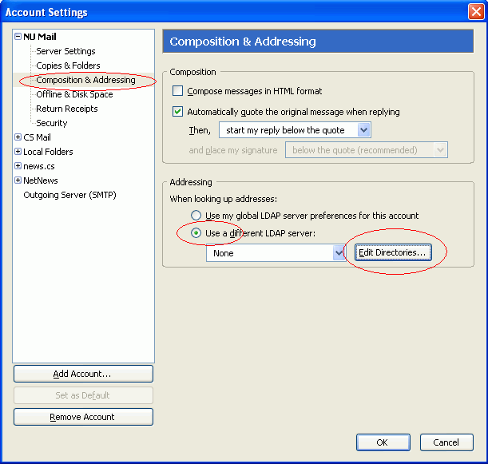

Northwestern's LDAP directory service contains the email addresses of everyone at Northwestern. You can tell Thunderbird to check that directory and complete addresses for you when you compose a new email.
Click on Tools | Account Settings.... The Account Settings dialog appears. Click on Composition & Addressing under your Northwestern email account, Use a different LDAP server: and the button Edit Directories.... |
 |
The LDAP Directory Servers dialog appears. Click on the Add button. |
|
The Directory Server Properties dialog appears. Fill in the General tab as shown. Then click on the Advanced tab. |
|
| Fill in the Advanced tab as shown. Then click on OK. | |
| Select NU LDAP from the list of LDAP directories, and click OK again. |
Test your settings by creating a new email and typing a few characters of someone's name into the To field. Wait a few seconds and see if auto-completion presents a menu of names that match what you typed.
Note: for me, auto-completion of addresses does not work if I try to use NU LDAP as my global LDAP server, even though a bug report on this problem says it has been fixed.